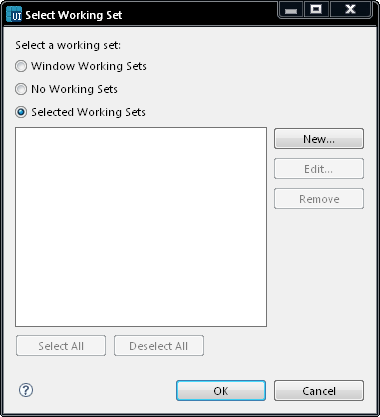

Select Working Set
Working sets group elements for display in views or for operations on a
set of elements. The navigation views use working sets to
restrict the set of resources that are displayed. If a working set is
selected in the navigator, only resources, children of resources, and
parents of resources contained in the working set are shown. The
problems view, tasks view and bookmarks view can all be filtered based
on a working set. When using the search facility, you can also use
working sets to restrict the set of elements that are searched.

Figure:
Select Working Set